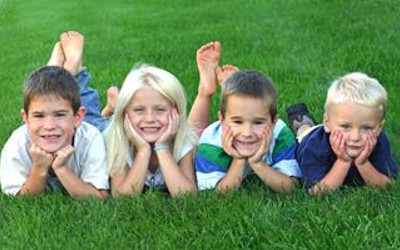
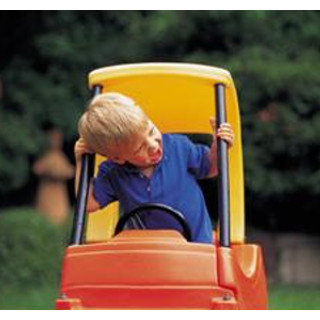
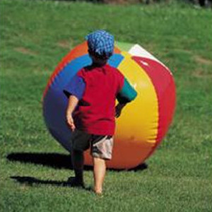
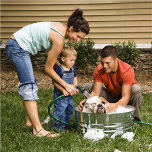

Outdoor Activities for your Kids
Summer is almost here!! Let kids have a lot of fun outdoors, their age demands to explore the nature as everything they find outdoors is new and exciting for them. They are curious about all what they see outdoors. Summer is a great time to enjoy these days in family, parents have to take the children outdoors frequently, playing at the garden with them or taking them to a nearby park would be a good start. Remember to enjoy your kids every moment and do not forget your camera to help you to capture those unforgettable moments.
How to make your kids happy? Here are few ideas for you.
Let your kids being part of the nature!! Kids love to get down and dirty in the soil. Why not to let them helping you to plant and taking care of plants, herbs and vegetables. It is not necessary to have a big garden for that; many plants grow well in pots or in a smallest backyard space.
Why not to take your kids to a park with their favorite toy, they will learn how to socialize, how to make new friends. They will enjoy the company of other kids, both their age and older. Parents can teach the kids about sharing their toys.
Discover the individual talents and skills of your kids when they are practicing sports. Sports gets the children moving, helping them build muscle, avoid obesity and also help to develop physical skills like coordination and agility. You need to consider that some children are good practicing one sport and others prefer another sport. It may take a few tries to find the right sport for your kid.
Sometimes the simplest outdoor activities in family leave the most lasting memories for kids. Visiting an open farm will be a good experience; there are many options, if you prefer to visit a farm that produces fruits and vegetables will be a good idea or maybe a farm where you can find a wonderful collection of animals and birds in one place will be more exciting for them.
Having a pet at home helps your kid to develop love and compassion for animals. Your kid will be happy helping you bathing the dog, once in a month will be enough. But don't overdo it! Too many baths take away the natural oils from a pet's skin.

By encouraging kids to cycle from an early age and getting them to take their ability riding a bike, will equip them with a skill for life.